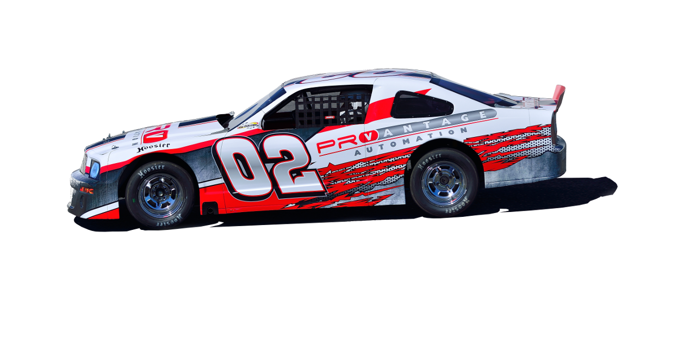

ProVantage Expands to Serve Database & Supervisory Control Opportunities
With the prominent demand for data collection, storage, and analysis, ProVantage has expanded their services to incorporate data management into their abilities.
The expansion has come through the acquisition of Matthew Susi, from McMaster University’s Bachelor of Technology: Process Automation program. Matt brings to the team expertise and experience in SCADA and Database systems as well as statistical analysis and project management skills.
Moving forward, ProVantage will work to develop and incorporate Data management solutions with clients to assist in improving their day-to-day operations from a variety of aspects. These aspects will include downtime tracking of processes, OEE calculations and capabilities of machines and production lines, as well as quality analysis of all produced products throughout operation. Data collection has become a prominent need in the manufacturing industry as it helps to provide all business decisions with well prepared and up-to-date information for greatest success.
These services are the latest offer from ProV to help meet the needs of the End User while going above and beyond the steadily increasing market demands.

ProVantage Automation and Product Handling Concepts Partner to Release the Vantagecaser™
ProVantage Automation, Canada’s leading packaging automation integrator, has co-developed the VantageCaser in collaboration with its manufacturing partner, Product Handling Concepts, of Appleton, WI.
Jointly, the 2 companies announce roll-out of the VantageCaser to satisfy high speed applications in converting and ‘big box’ consumer goods packaging. ProVantage & PHC saw an unfulfilled need for a smarter, faster case / tray packer, which takes away bottlenecks in the packaging process, and so was the design objective for this machine.
The machine will be unveiled 1st Q 2014 at PHC – Appleton WI, where most major tissue converters are based. PHC and ProV thank those end-users in Canada and the USA, who provided their design criteria for the VantageCaser. The design team of the VantageCaser has engineered over 1200 tissue casepackers.
Read more on the Vantage Caser here.

ProVantage Attends the Bi-Annual TOP 50 Pack Idea Expo
ProVantage was an attendee of the TOP 50 Pack Idea Expo at the Mississauga Convention Centre show casing the ProV Simlab and VantageCaser Concepts.
CEO Robert Hattin and SCADA Specialist Matthew Susi were on hand to demonstrate the additions ProVantage has developed in the past few months, highlighting newer Servo upgrades, Supervisory Control and Data Acquisition solutions, as well as mechanical/automation/safety related upgrades and retrofits available to customers.
The Expo was an excellent opportunity for ProV to connect with a variety of industry consumers and to provide an understanding of the possibilities available to them in regards to improving their operations functionality and efficiency with the help of ProVantages services. The Expo allowed discussions regarding the importance of SCADA within everyday manufacturing operations as well as the cost effectiveness of affordable retrofits versus complete machine replacement to improve manufacturing capability with pre-existing methods.
2014 Race Season Begins
With the summer season here, yet another race season is upon us. With a previous season winner title to defend, the ProVantage car is once again ready for another exciting and competitive season to begin.
The race season begins on May 10th, and looks to be another competitive one for the ProVantage car with many of the competitors looking to take over the top spot. The series marks ProV’s annual opportunity to bring our employees and their families together outside of work projects to cheer on the 02 car as it aims to take its spot at the top once more. 
Retrofit Over Replacement Thanks to ProVantage
ProVantage was commissioned by a high tier packaging company to assess, evaluate, and improve their current packaging machinery and bring it up to today’s standards.
The existing machinery’s legacy controls and hardware were found to be causing a bottleneck in the facilities operating capabilities. Despite the machines good condition it appeared the only solution would be too replace it with a newer, more recent model.
ProVantage was able to remedy this situation by assessing the limitations of the machine, highlighting the areas of retrofit possible, as well as where controls upgrades could be applied while retaining pre-existing components to reduce cost of the project. Effective analysis by ProVantage allowed for appropriate legacy controls to be applied, making use of existing legacy controls and I/O and upgrading it to standard industry controllers without compromising the operability. This was further continued by the upgrading of both the panel and VFD’s to further improve the machines operational capability.
As a result of this, what was the original plan to be a complete replacement, became a more efficient retrofit upgrade utilizing current components available at a fraction of the cost of the originally proposed machine replacement.
Are you interested in how ProVantage can provide service success like this in your plant or operation? Call us to talk with our Automation, Mechanical and SCADA specialists at (905)-648-9800 so that we can best help you reach your facilities maximum potential.
ProVantage Expands to Serve Database & Supervisory Control Opportunities
With the prominent demand for data collection, storage, and analysis, ProVantage has expanded their services to incorporate data management into their abilities.
The expansion has come through the acquisition of Matthew Susi, from McMaster University’s Bachelor of Technology: Process Automation program. Matt brings to the team expertise and experience in SCADA and Database systems as well as statistical analysis and project management skills.
Moving forward, ProVantage will work to develop and incorporate Data management solutions with clients to assist in improving their day-to-day operations from a variety of aspects. These aspects will include downtime tracking of processes, OEE calculations and capabilities of machines and production lines, as well as quality analysis of all produced products throughout operation. Data collection has become a prominent need in the manufacturing industry as it helps to provide all business decisions with well prepared and up-to-date information for greatest success.
These services are the latest offer from ProV to help meet the needs of the End User while going above and beyond the steadily increasing market demands.
ProV Virtual Reality is a Real Hit with Ontario’s Packagers
ProVantage Automation was a featured exhibitor at the recent Top 50 Packaging Technologies, with Brad, Jesse and Rob demonstrating ProV’s suite of automation solutions to Ontario’s packaging elite.
A real hit for the guests was the Virtual Reality Lab that ProV uses for the development and validation of some of its advanced machines.The VR Lab allows ProV designers and engineers to look inside at all mechanical assemblies for conflicts in full scale. It also allows end users to see the machine ‘walk through’ to fully understand the design advantages of the new PHC VantageCaser, due to roll out soon.
The VR Lab is a useful tool that is an adjunct to ProV’s engineering designs and further reduces the development time of new mechanical designs. As a validation tool, the VR Lab can help users ensure the quality of design by walking through and beside everything from complex building layouts to process piping installations to anticipating ergonomic anomalies. Want to see inside a control cabinet ... easy; like to see the machine in a different color? Done; wish to validate the utility runs through a building? You can walk right beside them. Check to make sure the energy conduits are separated properly, before they are built? Do it at your desk.
The VR Lab is just another innovative tool that ProV uses to make End Users more productive and respond to increasing market demands. You are invited to drop into the Ancaster Automation Center to experience this novel tool for solving complex issues.